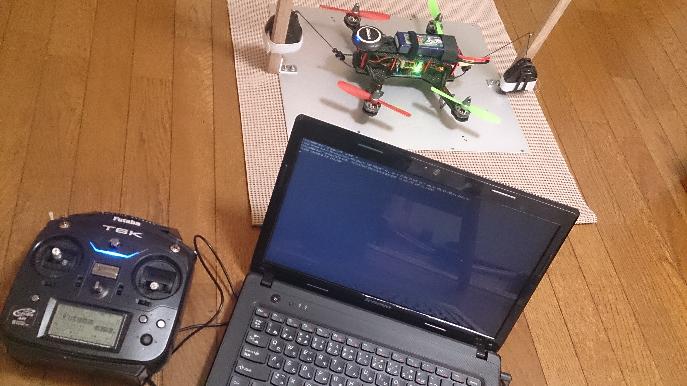
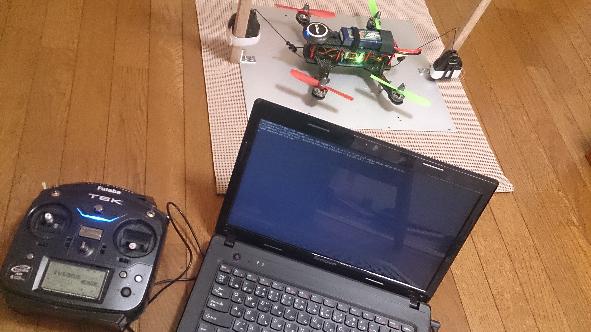

VL53L1X is a ST's new TOF(time of flight) sensor. ST gives its driver and API library with the dual license. See ST's page for detail. Although that code is for the STM32 platforms primarily, they are written with the highly modular manner and possible to be used with other …
I've tried to make a simple and budget local positioning system with openMV cam for the indoor flight of tiny copter.
Looks not so good precision but not so bad as a Poor Man's system. A LOITER and LAND flight test with my hachidori copter …
Hachidori which means 'humming bird' is a remote sensor/actuator board controlled by ArduPilot running on PC. It's intended to contribute to ArduPilot, though it's still in the experimental phase. It's a tiny open project of DCoJA started by DroneWorks Inc. I was a contractor with DroneWorks mainly for porting …
I'm trying another simple board for esp32 with ethernet. This is a board to mount ESP32 DevKit-C and Waveshare LAN8720 PHY module with a few extra parts. It can also use ESP-WROOM-32 chip directly instead of DevKit-C module.
KiCAD files for this board can be seen here as hardware/esp32-wslan8720 …


 



{kind=link}